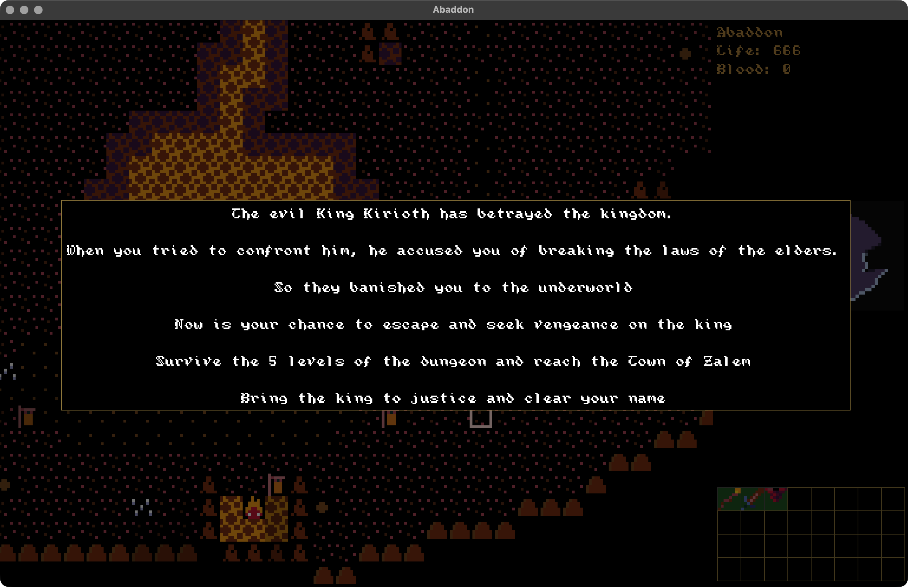
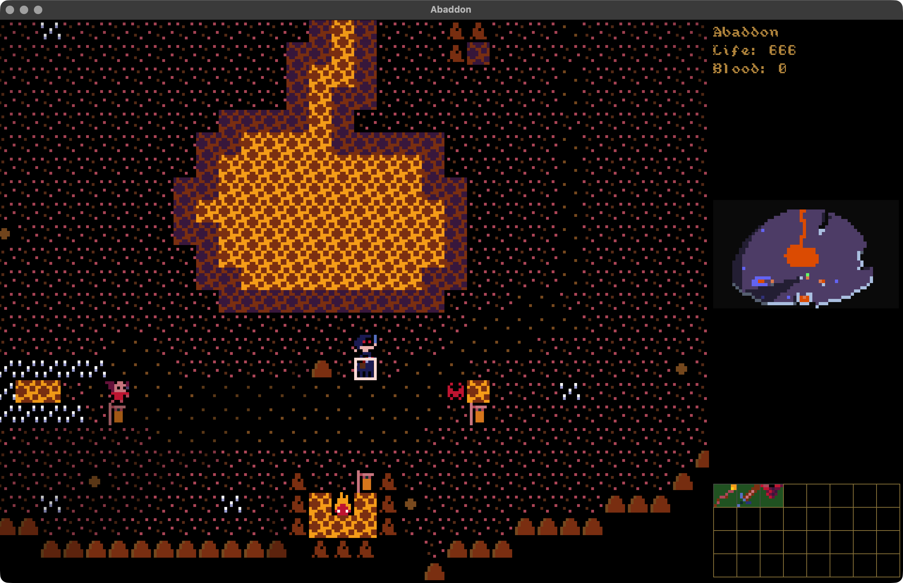
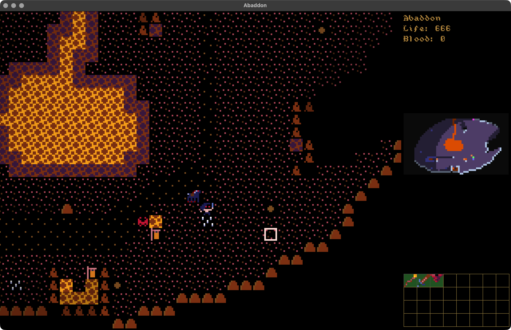

Abaddon
Completion ▰▰▰▰▰▰▱▱▱▱ 60% · Playable, but jam mechanics still missing
Abaddon is a quest for revenge. King Kirioth had you banished to the underworld, and now you ride back up out of hell on a demon horse, carrying a sword called Vengeance that grows stronger with every drop of blood it drains. Your health is finite and never regenerates, so every fight counts. The combat is tactical and leans heavily on the environment.
I made it in seven days for the 7DRL Challenge 2024, on top of my Heaven & Hell engine (Go, Ebitengine and LDtk maps). It placed #36 overall, which I'm still quite happy about.
An honest note: the final jam source got lost. The last commit and the uncommitted work from jam week are gone. This browser version is reconstructed from the newest surviving engine source plus the data files from the shipped build. You get the hell town, the story, the Avenger with 666 life and Vengeance in hand, and the dungeons. But the horse maneuvers, the blood mechanic and a few jam-only scrolls aren't back yet, so it's not exactly the game I shipped.
Features
- Start in the hell town as the Avenger, with the sword Vengeance equipped and the quest text on screen (F3 shows it again)
- Five dungeon levels between hell and the Town of Zalem, built from LDtk room templates by an accretion generator
- Field of view, pathfinding and light sources, torches included
- Data-driven content: weapons, armor, potions, scrolls, enemies and uniques live in recfiles, plus shell scripts to remap and list them
- Inventory, equipment, item modifiers, vendors, shrines, throwing and ranged attacks
- Targeted and untargeted spells, status effects like confusion, charm, fear and berserk
- An earthquake spell that rebuilds the walls around you and checks the map stays connected
- Graphical tiles via Ebitengine or a plain terminal mode via tcell, and now a browser build
Under the hood
Room templates have rules, so a level can demand or forbid particular hand-drawn rooms (dungen/accretion.go):
type TemplateRules struct {
RequireTemplates map[string]bool
ForbidTemplates map[string]bool
TemplatePrefix string
NoDoors bool
}Before a generated level is accepted, every point of interest has to be reachable. That includes anything carrying the win-condition tag (common/base_state.go):
isStairs := cell.TileType.Special == gridmap.SpecialTileStairsUp || ...
isVendor := cell.Actor != nil && (*cell.Actor).IsVendor()
isWinCondition := cell.Actor != nil && (*cell.Actor).IsWinCondition()
isQuestItem := cell.Item != nil && (*cell.Item).IsQuestItem()There's a little OSR combat simulator in cli.go that pits Conans of different levels against a kobold to tune the numbers:
fighterLevelOne := osr.NewAverageFighter("Young Conan")
fighterLevelFive := osr.NewAverageFighter("Teenage Conan")
fighterLevelTen := osr.NewAverageFighter("Conan")
// max fighter always wins vs a kobold
// min fighter still has 20-40% chance to win the fightThe whole conspiracy plot of the bigger game is sitting in a comment in game/def_unique_items.go:
3. Kirioth persuaded both of them to follow his plan and promised the wealth and status
Kirioth sacrificed some poor people when he summoned Lucifer, trying to control him
4. Shekel & Kirioth are responsible for the creation of meat jackIdeas & inspirations
The engine's readme.txt says it plainly: an Angband-style crawler "heavily inspired by Angband and the original Diablo", meant to be played in short bursts, with no to-hit rolls, no resistances and no ammo. It even admits: "This won't win any awards in terms of innovation anytime soon".
osr_crawl.txt is an OSR wishlist: low power, combat as a bad idea, at least three options in every situation ("Fight / Flee / Be tricky"), ropes over chasms, torches you can throw, and "Impale a monster with a closing portcullis". balance.txt works through being camped at the stairs by three monsters and lists ways out (oil flask, scroll of entrance, potion of attract monster). It also sketches a boss you need 15 to 20 hits to kill.
plan.txt has the juice list: screenshake, hit flashes, bouncy movement, camera lerping and "Really nice sound fx". Its philosophy section reads "Embrace the grind, but make it short and sweet". The bottom of todo.txt has a heading for "missing 7drl goals", and the only thing listed under it is "story".
Where it started, where it ended
The first commit is from 2024-01-24, six weeks before the jam. Heaven & Hell started as a Diablo-like with a town above and hell below, a cathedral with Meat Jack on level 2 and Lucifer on level 8. It quickly went data-driven, then got a terminal mode, and in February Ross Carran (29 of the commits) added the earthquake magic.
For the 7DRL I flipped it around: you start in hell, with the quest "Survive the 5 levels of the dungeon and reach the Town of Zalem" and King Kirioth as the man to bring to justice. What's in this repo is the engine plus the jam data and a thin layer of rebuilt glue from 2026 (the hell start, Vengeance, the quest text, the Life HUD, the browser build). The jam code itself, horse, blood and all, is gone.
State of the repo
The surviving engine source stops on 2024-02-26. The jam commits after that are lost, and the last activity is the 2026-10-01 reconstruction plus build_web.sh and publish_web.sh. It builds with go build -tags embedded . and runs in the browser.
todo.txt still lists open bugs, like "Word of Recall is instantly", corpses drawn over items, and enchant armor working more than once. King Kirioth is in the data with a win_condition tag, but in the code that tag only feeds the reachability check. There's no victory screen hooked up, and the dedication text only shows when you quit. Measured against the jam game, the dungeon, story and loot are back, but the mount, Vengeance's blood draining and a few scrolls are not. I'd call it a bit over half of what I shipped.
Is it a real game?
Playable reconstruction. You can die, and since health doesn't regenerate, that happens. You get the story intro and five dungeon levels with uniques and loot to fight through, which is a proper session or two. What you don't get is a real ending: killing Kirioth doesn't trigger a win in this code, and the mechanics that made the jam version its own thing are missing. If you want the game as it was rated, the itch.io build is the real one.
Screenshots



Latest updates
- 2026-10-01 Reconstructed from the shipped build's data and ported to the browser
- 2024-03-09 Shipped the 7DRL build
- 2024-03-01 Last jam commit (source since lost)
- 2024-02-26 Earthquake magic merged in
- 2024-02-25 Start & end screens, embedded assets